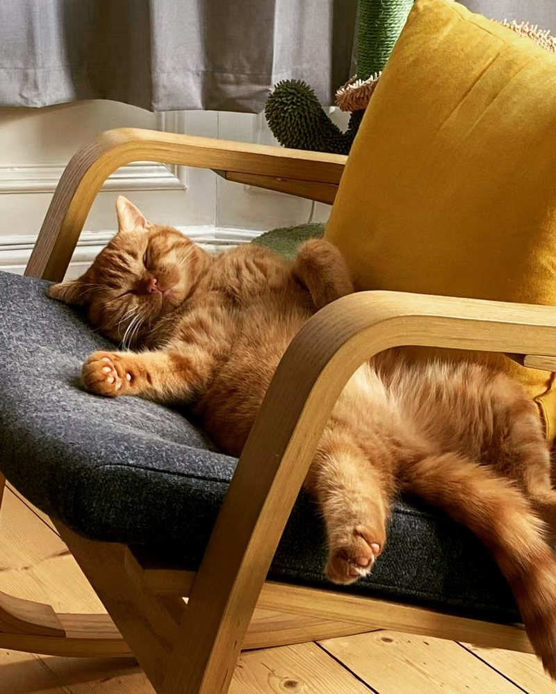

About
Hi! I am Jiawei Li. Welcome to my webpage.
I am currently a Lecturer in Probability at the School of Mathematics, University of Edinburgh. Previously, I was the Zeev Nehari Visiting Assistant Professor at Carnegie Mellon University (2019–2022).
I obtained my doctorate from the University of Oxford in 2019, under the supervision of Prof. Zhongmin Qian.
My research interests mainly lie at the intersection of stochastic analysis and partial differential equations, such as SDEs arising from PDEs, stochastic PDEs and random PDEs.
My CV can be found here (last updated November 2026).
- PresentLecturer in ProbabilitySchool of Mathematics, University of Edinburgh
- 2019 – 2022Zeev Nehari Visiting Assistant ProfessorCarnegie Mellon University
- 2019DoctorateUniversity of Oxford · supervised by Prof. Zhongmin Qian

Research
My work sits at the intersection of stochastic analysis and partial differential equations.
- stochastic analysis
- PDEs
- SDEs arising from PDEs
- stochastic PDEs
- random PDEs
-
[01]
Probabilistic well-posedness of dispersive PDEs beyond variance blowup II: quadratic nonlinear wave equation
arXiv preprint arXiv:2611.30936
-
[02]
Fourier restriction norm method adapted to controlled paths: stochastic wave equations
arXiv preprint arXiv:2607.07618
-
[03]
Nonlinear PDEs with modulated dispersion III: multiplicative noises
arXiv preprint arXiv:2607.08385
-
[04]
A remark on pathwise well-posedness of the 1-d stochastic heat equation
To appear in Proc. Roy. Soc. Edinburgh Sect. A · arXiv:2607.09033
-
[05]
A remark on the log-Sobolev inequality for the Gibbs measure of the focusing Schrödinger equation
J. Dyn. Diff. Equat. (2026)
-
[06]
Probabilistic well-posedness of dispersive PDEs beyond variance blowup I: Benjamin–Bona–Mahony equation
arXiv preprint arXiv:2509.02344
- [07]
-
[08]
Nonlinear PDEs with modulated dispersion II: Korteweg–de Vries equation
To appear in Mem. Eur. Math. Soc. · arXiv:1406.7675
-
[09]
Twin Brownian particle method for the study of Oberbeck–Boussinesq fluid flows
In Stochastic Analysis and Applications 2025, 95–149, Springer, Cham
-
[10]
Mean field equations arising from random vortex dynamics
arXiv preprint arXiv:2404.05054
-
[11]
Tail bounds for sums of independent two-sided exponential random variables
In High Dimensional Probability IX — The Ethereal Volume (2023), 143–154, Progr. Probab. 80, Birkhäuser/Springer, Cham
-
[12]
On the transport equation for probability density functions of turbulent vorticity fields
Proc. Royal Society A 478 (2022), no. 2257, Paper No. 20210534, 17 pp.
-
[13]
On distributions of velocity random fields in turbulent flows
J. Lond. Math. Soc. (2) 108 (2023), no. 1, 54–79
-
[14]
The vortex dynamics in incompressible viscous turbulent flows
arXiv preprint arXiv:2101.00375
-
[15]
Fluctuations of a nonlinear stochastic heat equation in dimensions three and higher
SIAM J. Math. Anal. 52 (2020), no. 6, 5422–5440
-
[16]
Large deviation principle for fractional Brownian motion with respect to capacity
Potential Anal. 54 (2021), no. 4, 655–685
-
[17]
Fine properties of fractional Brownian motions on Wiener space
J. Math. Anal. Appl. 473 (2019), no. 1, 141–173
Talks
37 seminars, workshops and conferences since 2018
20268 talks
- DecVienna Probability SeminarISTA, TU Vienna, Austria
- NovStochastic Analysis SeminarUniversity of Strathclyde, UK
- NovWarwick Probability SeminarUniversity of Warwick, UK
- SepWorkshop on Fractional, Rough, and Singular Stochastic DynamicsLeeds, UK
- JulBIRS Workshop: New Trends in Rough Analysis: Open Challenges and ApplicationsIASM, Hangzhou, China
- MarWorkshop Optimal Transport and Noise: OT meets (S)PDEsWIAS, Berlin, Germany
- JanAnalysis SeminarUniversity of Augsburg, Germany
- JanAnalysis SeminarUniversity of Bonn, Germany
202510 talks
- NovStochastic Analysis SeminarImperial College London, UK
- OctProbability SeminarBeijing Institute of Technology, China
- OctSeminar at the College of Mathematics and StatisticsChongqing Universityonline
- SepNorth British Probability SeminarEdinburgh, UK
- JulRecent Trends in Rough Analysis and Dynamical Systems: Theory and PracticeLiverpool, UK
- JunProbabilistic study of nonlinear dispersive PDEsBirmingham, UK
- AprHWU and UoE Analysis & Probability afternoonEdinburgh, UK
- MarMaxwell Institute Workshop on Stochastic AnalysisEdinburgh, UK
- MarAnalysis SeminarUniversity of Edinburgh, UK
- JanPDE ColloquiumUniversity of Münster, Germany
20245 talks
- DecWorkshop on Stochastic Analysis and Ergodic TheoryDurham University, UK
- DecProbability and Statistics SeminarUniversity of Nottingham, UK
- JunSwansea–Tianjin Stochastic Analysis WorkshopSwansea, UK
- JunUK Research Network in Stochastics Kick-Off WorkshopEdinburgh, UK
- AprBICMR – ARIT Talkonline
20233 talks
- SepNorth-East and Midlands Stochastic Analysis Seminar (NEMSA)Oxford, UK
- JulProbability SeminarFudan University, Shanghai, China
- JanLisbon WADE – Webinar in Analysis and Differential Equationsonline
20223 talks
- NovNorth British Probability SeminarUniversity of Edinburgh, UK
- NovMini-Symposium in Analysis and PDEsMaxwell Institute, UK
- FebUNA-Europa Workshoponline
20201 talk
- AugBernoulli–IMS One World Symposiumonline
20191 talk
- OctProbability/Math Finance SeminarCarnegie Mellon University, USA
20186 talks
- NovThe 10th Oxford–Berlin Young Researchers Meeting on Applied Stochastic AnalysisUniversity of Oxford, UK
- OctStochastic Analysis SeminarUniversity of Oxford, UK
- SepMaths SeminarTaishan College, Shandong University, China
- JulThe 48th Probability Summer SchoolSaint-Flour, France
- JulYoung Researchers in Mathematics (YRM 2018)University of Southampton, UK
- JulResearch Students Conference in Probability and Statistics (RSC 2018)University of Sheffield, UK
Teaching
University of Edinburgh
School of Mathematics
- Stochastic Control and Dynamic Asset Allocation
- Financial Mathematics
- Financial Mathematics
- Financial Mathematics
Carnegie Mellon University
Department of Mathematical Sciences
- Principles of Real Analysis I
- Probability lecture notes
- Differential and Integral Calculus
- Principles of Real Analysis I
- Differential and Integral Calculus
Contact
University of Edinburgh